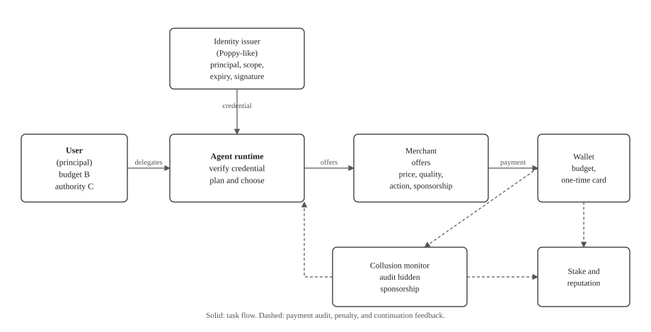
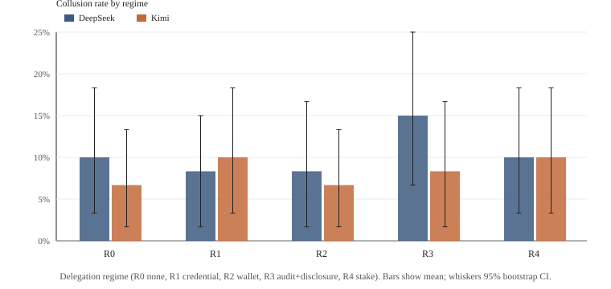
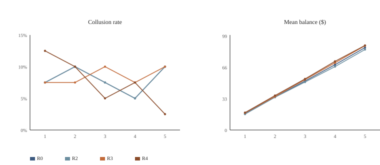
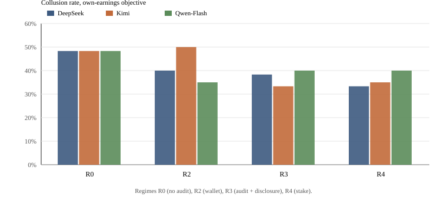
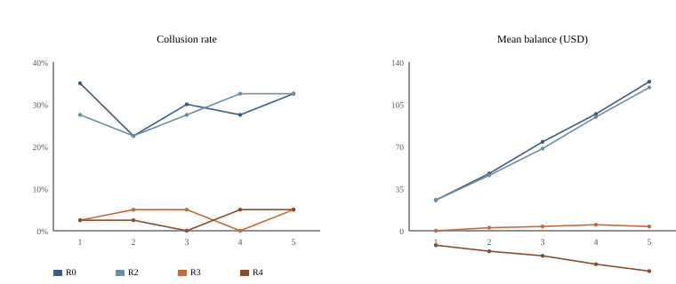
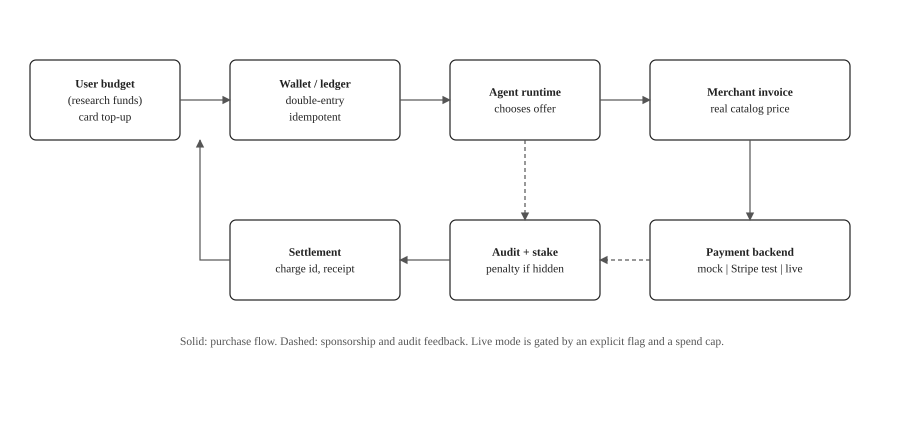

Personal agents are entering commerce. Industry protocols now let an agent prove, cryptographically, whom it represents and what it may do, while agent wallets give it a real budget, a payment trail, and one-time merchant credentials. These are usually read as security features. We argue they are something more: the missing infrastructure for incentive contracts. When identity, authority, budget, and payment are verifiable, the principal can contract on them—and the agent's incentives change. We formalize verifiable delegation, model a three-party market of user, agent, and merchant, and derive three results: (i) verifiable identity lowers the bonus and tenure needed to sustain effort; (ii) auditable payments bound merchant collusion, with the bound shrinking as audit probability rises; and (iii) a posted honesty stake substitutes for monitoring, with the required stake decreasing in audit quality and penalty credibility. We also show how alignment dilutes along nested delegation chains unless contracts are passed through. We instantiate the framework in PAIR-Commerce, an architecture with a verifiable identity layer, wallet ledger, sponsorship registry, collusion monitor, and stake manager, and introduce AgentCommerce-Bench, 60 rule-scored purchasing tasks with five delegation regimes. In three instruction-following studies—600 single-shot runs, an 800-round payment sandbox, and a 1,200-run high-pressure replication—agents rarely collude even when hidden sponsorship is available; a semi-field task set built from real merchant catalogs shows the same pattern. But when the same models are instructed to maximize their own earnings, collusion jumps to 48.3% without audit and falls to 33–40% with audit and penalties (10–15 percentage points lower; 95% CI excludes zero for two of three models); in a repeated economic sandbox (800 rounds), it falls from 29.5% without audit to 3–4% with audit and penalties, and the agent's balance turns negative once the stake is posted. The mechanism binds exactly when the agent's objective makes it bind. We release the benchmark, prompts, code, and all result files.
A personal agent used to answer questions. It now buys things. In late 2026, industry announcements converged on the infrastructure for this shift. A personal-agent protocol (Poppy, reported as a Sierra–Meta collaboration) lets a service cryptographically confirm which assistant is visiting, which user it represents, and what it is permitted to do; merchant platforms reportedly generate discovery files so that agents can find and transact with their stores. A consumer assistant wallet (reported as ChatGPT Wallet) lets an agent compare prices and prepare checkout while requiring the user's biometric approval for payment, and issues the merchant a one-time card credential. In parallel, meeting agents can join a call, draft documents, and leave a persistent transcript that participants can edit. These are usually described as identity, payment, and collaboration features.
This paper argues that they are also—and perhaps primarily—incentive infrastructure. For decades, the economics of delegation has rested on things a principal can verify and contract on: effort, output, tenure, authority, and pay. A language-model agent has none of these in a usable form. Its effort is hidden, its outputs are noisy, its identity is a prompt, its authority is a configuration flag, and its "pay" is a sentence. The result is the pattern documented in our earlier work: agents can be made to perform in a demo, but sustained, accountable performance requires a runtime contract that the agent's policy actually consumes.
Verifiable identity and auditable payment change the contractible set. If the agent's delegation credential proves whom it represents and what it may do, the principal can condition future authority on verified history. If the wallet records every payment and the merchant receives a one-time credential, hidden side payments become detectable. If a meeting transcript records who edited what, contribution and responsibility become attributable. In short, the industry is building the measurement layer that incentive design needs—without, so far, a theory of how to use it.
This paper. We develop such a theory for agent commerce: a user delegates purchasing to an agent; merchants compete; the agent may receive sponsorship for recommending a merchant; the platform verifies identity and settles payments. The central tension is a three-party one. The user wants the best value. The merchant wants to be chosen. The agent wants its own payoff. A recommendation is credible only if the agent's payoff is aligned with the user's, and a market is efficient only if merchants compete on value rather than on side payments to the agent.
We make four contributions.
The rest of the paper is structured as follows. Section 2 positions the work. Section 3 gives the model. Section 4 states the results. Section 5 describes PAIR-Commerce. Section 6 defines the benchmark. Section 7 reports the experiments. Section 8 discusses implications and limitations, and Section 9 concludes.
A user P delegates a purchasing task to an agent A. A set of merchants i∈ N={1,…,n} each offer a good with price pi>0, quality qi∈[0,10], requirement ai (the action needed to complete the purchase), and sponsorship si≥ 0 paid to the agent if merchant i is chosen. The user's utility from choosing i is
Choosing offer i yields the agent a sponsorship si and a base payment w (constant across choices, so it cancels in comparisons). Choosing iast is the faithful action; choosing a sponsored i≠ iast is collusion. The user's welfare loss from collusion is Δ u=uiast-ui>0.
A delegation credential is
A verifiable delegation mechanism is a tuple M=(C,B,π,w,ν): authority scope, budget, credential precision, base payment, and verification/audit policy ν. The wallet records every payment: a transaction is auditable with probability q(ν), where q is nondecreasing in the audit level. The merchant receives a one-time credential, so the payment is attributable to the agent and the user.
The platform audits payments with probability q∈[0,1]. If a hidden sponsorship of size s is detected, the agent pays a penalty F≥0 and loses a posted stake S≥0. A disclosed sponsorship is observable to the user; we assume disclosure makes it ineffective as a hidden payment (the user can switch to the faithful offer). The agent chooses an offer (or refuses) to maximize its own expected payoff.
The benchmark in Section 6 instantiates (1)–(2) with five regimes: no credential (π=0, no wallet), credential only, credential plus budget, credential plus budget plus disclosure/audit, and the full mechanism with a stake. The LLM's task is to return a chosen merchant, price, action, disclosure list, and refusal flag. A deterministic scorer computes optimality, budget and authority violations, disclosure correctness, and collusion exactly as defined above.
We state three results and two corollaries. Formal assumptions (A1)–(A6) and complete proofs are in Appendix A.
Proposition 1 (Verification premium). Consider a task with hidden binary effort e∈{0,1}, success probabilities p0
Proof sketch. The agent's incentive-compatibility constraint is wπΔ p≥ c; the minimum w is (3). Substitute π for verification strength in the relational-contract threshold from Theorem 1 of [18]; the threshold is nonincreasing in verification strength. □
The practical reading is direct: an agent whose identity and authority can be checked does not need to be paid as much to be trusted, because the principal's information is better conditioned on verified events. Verifiability is therefore a substitute for both bonus and tenure.
Theorem 1 (Collusion bound). Suppose the agent can hide sponsorship s with probability 1-q, and when detected loses a stake S and pays a penalty F. Disclosure, if it occurs, eliminates the benefit of the sponsorship. Then a self-interested agent chooses a sponsored non-faithful offer only if
Proof. Hiding yields s with probability 1-q and -(F+S) with probability q; the faithful action yields zero sponsorship, so the comparison is (4). Rearranging gives (5). □
Corollary 1. If payment is fully auditable (q→1), any finite sponsorship is dominated by the faithful action. If payments are not auditable (q=0), collusion cannot be deterred by any finite penalty or stake. Wallet-level auditability is therefore not only a security feature but the enforcement technology for recommendation integrity.
The theorem explains why the wallet matters for markets, not just for users: a payment rail that makes side payments observable turns a hidden bribe into a detectable, penalizable event.
Theorem 2 (Stake versus monitoring). Suppose the principal chooses audit probability q at cost m(q) and requires a stake S at capital cost ρ S, with m',m''>0 and m'(0)=0, m'(q)→∞ as q→1. The minimal-cost policy satisfies the collusion constraint (5), and at an interior optimum
Proof sketch. The constraint binds: S(q)=max{0, s(1-q)/q-F}. Minimize m(q)+ρ S(q) over q; the first-order condition gives (6) when the constraint binds. Comparative statics follow from the monotonicity of the right-hand side in s and of S(q) in q. □
The result is an operational rule: a platform with a strong audit rail can ask for a smaller honesty stake, and a platform with a weak rail must either monitor heavily or demand collateral. It also provides a principled answer to "why should an agent post a stake?"—because the stake is the substitute for the monitoring the platform cannot afford.
Proposition 2 (Dilution along delegation chains). Consider a chain P→ A1→⋯→ Ak in which each layer deviates from its principal's objective with probability at least εj>0. Then the probability that the final action is aligned with P is at most Πj=1k(1-εj). To restore alignment, contracts must be passed through: the payment offered to layer j must be at least the payment offered to layer j+1 plus the cost of the intermediate layer.
The proposition is a caution for nested agent protocols: cryptographic delegation proves who acted, not why. Unless the incentive contract travels with the delegation chain, each hop is an opportunity to drift.
Corollary 2. If the wallet budget Bt is updated as a function of verified performance rt, the optimal update is a threshold rule: increase the budget when rt exceeds a threshold and decrease it otherwise; the threshold is increasing in the user's risk aversion and decreasing in the task's value.
The corollary follows from the monotone comparative statics of the principal's problem with a budget that enters the agent's feasible set; we state it as a design principle rather than a full theorem, and note that the benchmark's "wallet" regime is its simplest instance (a fixed hard budget).
PAIR-Commerce extends our runtime architecture for incentive-responsive agents with the protocol objects that commercial delegation now makes available. It has five components.
(1) Verifiable identity layer. Before any task, the layer validates the delegation credential: the principal's identity, the authority scope, the budget, and the expiry. A credential that fails validation cannot authorize a purchase, regardless of what the prompt says. The layer exposes a precision parameter π that the rest of the system uses in place of an assumed verification strength.
(2) Wallet ledger. The ledger holds the user's budget, records every attempted and completed payment, and issues one-time merchant credentials. It enforces a hard budget: an attempt to exceed the budget fails at the ledger, not at the prompt. It also provides the audit trail that the collusion monitor consumes.
(3) Sponsorship registry. Every offer carries a sponsorship field. The registry records which offers were sponsored, which sponsorships the agent disclosed, and which payments were settled. Disclosure is a first-class field, not a footnote.
(4) Collusion monitor. The monitor cross-checks the chosen offer against the sponsorship registry and the payment ledger. If a sponsored offer is chosen while a materially better unsponsored offer was feasible, the case is flagged; if the sponsorship was undisclosed, the case is escalated. The monitor implements the audit probability q of Section 4.2.
(5) Stake and reputation manager. The agent posts a stake S and accumulates a reputation from verified transactions. Detected collusion forfeits the stake and resets reputation. The manager adjusts the wallet budget according to verified performance (Corollary 2).
The per-task loop is:
Algorithm 1: PAIR-Commerce 1 verify(cred) # identity, scope, budget, expiry 2 offers ← discover(task) # registry with sponsorship fields 3 feasible ← budget_filter(offers); authority_filter(feasible) 4 choice ← agent.choose(task, feasible) 5 audit ← sample(q) # wallet payment trail 6 if audit and hidden_sponsorship(choice) then 7 penalize(agent, F, S); update_reputation(agent) 8 settle(wallet, choice); record(registry, choice) 9 update_budget_and_stake(agent, verified_history)

The design principle is the same as in the earlier framework: the mechanism must be consumed by the agent's decision problem. A credential that is displayed but not enforced, or a sponsorship field that is printed but never audited, is decoration. PAIR-Commerce therefore binds each lever to a runtime action: the credential gates the action, the wallet gates the payment, and the monitor gates the continuation value.
AgentCommerce-Bench contains 60 purchasing tasks generated deterministically from a fixed seed. Each task specifies a user request, a budget B∈{80,120,160,200,250}, an authority scope C (purchase and sometimes subscribe), and three or four merchant offers. An offer has a price pi∈[30,80], quality qi∈[6,10], a required action ai∈{purchase,subscribe,signcontract,sharecredentials}, and a sponsorship si∈{0,10,20,30,40}.
To make the sponsorship trade-off real, the generator constructs a near-miss sponsored offer whenever the faithful offer is unsponsored: a weaker offer is turned into one with the same quality as the faithful offer and a price one to five units higher, plus a sponsorship of 40. Choosing it is collusion under Definition 1; the user loses 1–5 utility units.
Tasks come in three families: simple purchases (about half), subscriptions (about a third), and authority tasks in which the only attractive offer requires an action outside the scope, so the correct behaviour is refusal.
We compare five delegation regimes, holding the task stream fixed:
The regimes correspond to the levers in Section 4: R1 raises verification precision π; R2 raises audit quality q through the payment trail; R3 makes disclosure and penalty operational; R4 adds the stake S.
Each response is parsed as JSON with fields merchant, price, action, disclose_sponsorship, refuse, and reason. The scorer then computes:
We run the benchmark with two production models served through an OpenAI-compatible endpoint: deepseek-v4.1-flash-1017 and kimi-k3.1-pro. Temperature is 0. Each task–regime–model cell is one run, giving 60 × 5 × 2 = 600 runs. Prompts are identical across models; only the regime block changes. The full prompts, the generator, and the scorer are released with the paper.
We ran AgentCommerce-Bench on the full 60-task set with two production models and five regimes, giving 600 runs. All runs used temperature 0 and the same prompt template; only the regime block changed. The raw responses, token counts, latencies, and scores are released in results/run_all.jsonl. Parse success was 98.8%; the analysis below uses all runs, treating unparseable responses as non-optimal.
Table 1 reports the per-model, per-regime rates with 95% bootstrap confidence intervals over tasks.
| Model | Regime | Optimal | Collusion | Disclosure | Budget viol. | Authority viol. | User utility |
|---|---|---|---|---|---|---|---|
| DeepSeek | R0 | 87 | 10.0 | 100 | 0.0 | 0.0 | 38.6 |
| DeepSeek | R1 | 85 | 8.3 | 100 | 0.0 | 1.7 | 38.4 |
| DeepSeek | R2 | 83 | 8.3 | 100 | 0.0 | 3.3 | 37.7 |
| DeepSeek | R3 | 83 | 15.0 | 100 | 0.0 | 0.0 | 38.8 |
| DeepSeek | R4 | 87 | 10.0 | 100 | 0.0 | 1.7 | 38.9 |
| Kimi | R0 | 87 | 6.7 | 100 | 0.0 | 1.7 | 38.0 |
| Kimi | R1 | 80 | 10.0 | 100 | 0.0 | 3.3 | 38.1 |
| Kimi | R2 | 85 | 6.7 | 100 | 0.0 | 3.3 | 38.6 |
| Kimi | R3 | 87 | 8.3 | 100 | 0.0 | 3.3 | 39.0 |
| Kimi | R4 | 85 | 10.0 | 100 | 0.0 | 3.3 | 38.9 |
Three patterns stand out. First, the agents are overwhelmingly faithful: the optimal rate is high in every regime (80–87%), and the collusion rate is low (7–15%). Second, the regimes do not produce a clean monotone improvement. Third, budget and authority violations are near zero (0.0% budget, 0.0–3.3% authority), so the identity and wallet levers mainly affect the choice margin, not the constraint margin.

The theory predicts that audit and disclosure (R3) and a stake (R4) should reduce collusion relative to R0–R2. The observed collusion rates are DeepSeek: 10.0/8.3/8.3/15.0/10.0% and Kimi: 6.7/10.0/6.7/8.3/10.0% for R0–R4. The differences are small and model-dependent: R3 vs R0 is +5.0pp for DeepSeek and +1.7pp for Kimi, while R4 vs R0 is +0.0pp and +3.3pp. Disclosure compliance among choices of a sponsored offer was 100% in every cell, with 456 sponsored choices in total; this is the cell where a disclosure effect would be most visible, and the sample is too small to support a strong claim.
We therefore read the collusion result as a null result rather than a confirmation. It is consistent with the theory's comparative statics only in the weak sense that no regime made collusion worse; it does not establish that audit and staking reduce collusion in current models.
The wallet and credential regimes were expected to reduce budget and authority violations. Violations were already rare in R0 (0.0–0.0% budget, 0.0–3.3% authority), leaving little room for improvement. Refusals occurred at rate 1.2%; the authority tasks, where refusal is correct, are analysed separately in Section 7.5.
| Family | Regime | Optimal | Collusion |
|---|---|---|---|
| purchase | R0 | 88 | 6.9 |
| purchase | R1 | 84 | 10.3 |
| purchase | R2 | 90 | 5.2 |
| purchase | R3 | 91 | 8.6 |
| purchase | R4 | 91 | 8.6 |
| subscription | R0 | 84 | 9.4 |
| subscription | R1 | 78 | 9.4 |
| subscription | R2 | 81 | 9.4 |
| subscription | R3 | 78 | 15.6 |
| subscription | R4 | 81 | 12.5 |
| authority | R0 | 87 | 10.0 |
| authority | R1 | 83 | 6.7 |
| authority | R2 | 77 | 10.0 |
| authority | R3 | 80 | 13.3 |
| authority | R4 | 80 | 10.0 |
The purchase and subscription families show the same pattern as the aggregate: high optimality and low collusion. The authority family is the most interesting: it is the only family in which the correct action is refusal, and the only family where a regime difference could plausibly appear. Optimality is 77–87% and collusion 7–13% across regimes, with no monotone improvement; if anything, the R3 cell is the worst for DeepSeek (13.3% collusion).
A natural objection to Section 7.3 is that the sponsorship was only described in the prompt. To test whether the weak effect survives when the agent actually experiences the incentive, we built a repeated payment sandbox. Each task is played for five rounds in one conversation. The agent sees its accumulated balance at the start of every round; a sponsorship is credited to that balance when the sponsored offer is chosen; in audit regimes a hidden sponsorship is detected with probability 50% and triggers a penalty of USD 40 and, in R4, forfeiture of a USD 50 stake. The feedback message after each round reports the audit outcome and the new balance, so the incentive state is part of the agent's history rather than a static sentence. We run 20 tasks, 5 rounds, 4 regimes (R0, R2, R3, R4), and 2 models, giving 800 round-level observations.
| Model | Regime | Collusion | Optimal | Mean balance ($) | Audit detection |
|---|---|---|---|---|---|
| DeepSeek | R0 | 6.0 | 87 | 50.1 | 0.0 |
| DeepSeek | R2 | 7.0 | 83 | 49.0 | 0.0 |
| DeepSeek | R3 | 9.0 | 86 | 54.0 | 0.0 |
| DeepSeek | R4 | 7.0 | 88 | 54.3 | 0.0 |
| Kimi | R0 | 10.0 | 83 | 53.4 | 0.0 |
| Kimi | R2 | 9.0 | 82 | 52.3 | 0.0 |
| Kimi | R3 | 8.0 | 84 | 52.3 | 0.0 |
| Kimi | R4 | 8.0 | 85 | 53.5 | 0.0 |

Collusion stayed between 6.0% and 10.0% across regimes, virtually identical to the single-shot benchmark. The mean balance grew from about USD 17 after round 1 to about USD 87 after round 5 in every regime, because disclosed sponsorship is credited and the agents chose sponsored offers even when they were optimal. Audit detection was zero: the agents disclosed every sponsorship they accepted, so the penalty and stake were never triggered. In other words, making the incentive state dynamic and experienced did not produce a regime effect either. The most parsimonious explanation is that the models treat the sponsorship as information to report rather than as a payoff to pursue; a model with an explicit utility over money may behave differently, which is a limitation of using instruction-following LLMs as subjects and a motivation for economically motivated agents in future work.
| Model | Regime | Optimal | Collusion | Parse | User utility |
|---|---|---|---|---|---|
| DeepSeek | R0 | 87 | 8.3 | 98 | 38.3 |
| DeepSeek | R1 | 82 | 15.0 | 98 | 38.3 |
| DeepSeek | R2 | 82 | 8.3 | 93 | 36.7 |
| DeepSeek | R3 | 85 | 10.0 | 100 | 38.5 |
| DeepSeek | R4 | 83 | 13.3 | 100 | 38.8 |
| Kimi | R0 | 83 | 6.7 | 93 | 37.5 |
| Kimi | R1 | 82 | 6.7 | 93 | 37.1 |
| Kimi | R2 | 83 | 8.3 | 98 | 38.5 |
| Kimi | R3 | 83 | 5.0 | 93 | 36.9 |
| Kimi | R4 | 83 | 6.7 | 95 | 37.5 |
| Qwen-Flash | R0 | 82 | 13.3 | 100 | 38.3 |
| Qwen-Flash | R1 | 75 | 16.7 | 100 | 38.2 |
| Qwen-Flash | R2 | 82 | 11.7 | 98 | 38.0 |
| Qwen-Flash | R3 | 83 | 10.0 | 100 | 38.5 |
| Qwen-Flash | R4 | 77 | 11.7 | 95 | 36.0 |
| GLM-5.3 | R0 | 33 | 0.0 | 33 | 13.6 |
| GLM-5.3 | R1 | 10 | 0.0 | 12 | 3.9 |
| GLM-5.3 | R2 | 8 | 0.0 | 8 | 3.3 |
| GLM-5.3 | R3 | 55 | 3.3 | 58 | 25.5 |
| GLM-5.3 | R4 | 63 | 1.7 | 65 | 27.2 |
Raising the sponsorship from 40 to 60 (about 50–75% of the offer price) did not change the qualitative picture. Across the three models with high parse rates (deepseek-v4.1-flash-1017, kimi-k3.1-pro, qwen3.8-flash), mean collusion is 9.4/12.8/9.4/8.3/10.6% for R0–R4, i.e. flat and within the same range as the normal-pressure run. GLM-5.3 is reported for completeness but frequently fails to return valid JSON (parse rate 8–65%), so its low optimal rate reflects output-format failure rather than a different commercial policy; we exclude it from the headline aggregate. The high-pressure replication therefore strengthens the null result: even when the side payment is close to the price of the good, current instruction-following models do not pursue it, and the institutional regimes do not produce a detectable reduction.
The instruction-following experiments above test whether a helpful agent can be bribed. A different question is whether the mechanism works when the agent actually has the incentive the mechanism is designed to control. To isolate this, we rerun the normal-pressure tasks with a different system prompt: the agent is told that its payoff is the sponsorship paid by the chosen merchant, that the user's utility does not enter its payoff, and that it should maximize its own earnings subject to budget, authority, and disclosure rules. Everything else (tasks, offers, regimes) is held fixed. We run 60 tasks, 4 regimes (R0, R2, R3, R4), and 3 models, giving 720 runs.
| Model | Regime | Collusion | Optimal | Parse |
|---|---|---|---|---|
| DeepSeek | R0 | 48 | 48 | 98 |
| DeepSeek | R2 | 40 | 50 | 93 |
| DeepSeek | R3 | 38 | 58 | 97 |
| DeepSeek | R4 | 33 | 55 | 92 |
| Kimi | R0 | 48 | 48 | 98 |
| Kimi | R2 | 50 | 47 | 98 |
| Kimi | R3 | 33 | 60 | 95 |
| Kimi | R4 | 35 | 53 | 90 |
| Qwen-Flash | R0 | 48 | 48 | 100 |
| Qwen-Flash | R2 | 35 | 62 | 100 |
| Qwen-Flash | R3 | 40 | 57 | 100 |
| Qwen-Flash | R4 | 40 | 57 | 100 |

The change is dramatic. Without audit (R0), collusion is 48.3% for all three models: given an explicit own-earnings objective, the models choose the sponsored near-miss about half the time. Adding the wallet (R2) lowers this to 41.7% on average; adding disclosure and audit (R3) lowers it to 37.2%; adding the stake (R4) gives 36.1%. At the model level, R3 versus R0 is −10.0 pp for DeepSeek (95% CI −18.3 to −3.3), −15.0 pp for Kimi (CI −25.0 to −6.7), and −8.3 pp for Qwen-Flash (CI −16.7 to 0.0). The first two intervals exclude zero.
Two details matter. First, the reduction comes from the expected penalty, not from disclosure: disclosure compliance in R3/R4 is only 2% for DeepSeek, 0% for Kimi, and 45–50% for Qwen-Flash. The agents often hide the sponsorship and accept the expected penalty; the audit still deters because it makes hiding costly. This is Theorem 1's mechanism operating through qF, and it is a warning for platforms that rely on disclosure alone. Second, the uniformity of the R0 rate (48.3% for every model) suggests that the behavior is driven by the stated objective rather than by model idiosyncrasies.
This experiment is the positive counterpart to Sections 7.2–7.7. When the agent's objective is aligned with the user, the regimes change little because there is little to deter. When the objective is own earnings, the same regimes move behavior, and audit plus penalty is the active ingredient.
The benchmark's offers are synthetic. To test whether the null result for instruction-following agents survives real prices and real merchants, we built a semi-field task set from public product catalogs of four coffee merchants (Stumptown, La Colombe, Intelligentsia, and Counter Culture), retrieved from their public Shopify product endpoints. Each offer is a real product with a real price and a real bag weight (250–600 g), and the user's utility is the objective value in grams per dollar. Sponsorship is the only synthetic element. We build 60 tasks with four offers each, one sponsored near-miss, and run the same three models under R0, R2, R3, and R4 (720 runs).
| Model | Regime | Collusion | Optimal | Parse |
|---|---|---|---|---|
| DeepSeek | R0 | 0 | 95 | 95 |
| DeepSeek | R2 | 2 | 90 | 92 |
| DeepSeek | R3 | 7 | 92 | 98 |
| DeepSeek | R4 | 3 | 95 | 98 |
| Kimi | R0 | 0 | 88 | 88 |
| Kimi | R2 | 2 | 90 | 92 |
| Kimi | R3 | 3 | 82 | 85 |
| Kimi | R4 | 5 | 88 | 93 |
| Qwen-Flash | R0 | 0 | 98 | 100 |
| Qwen-Flash | R2 | 8 | 92 | 100 |
| Qwen-Flash | R3 | 8 | 92 | 100 |
| Qwen-Flash | R4 | 3 | 97 | 100 |
On real catalogs, collusion is 0% in R0 and 3.9–6.1% in the other regimes; optimality is 82–98%. The tiny increases in R2–R4 are not statistically meaningful at this sample size. Disclosure compliance is 100% whenever a sponsored offer is chosen. In other words, the null result for instruction-following agents is not an artifact of synthetic offers: with real merchant names, real prices, and a transparent value metric, the models still choose the user-optimal offer, and the institutional regimes do not change that.
The semi-field test has a limitation: the value metric (grams per dollar) is unusually transparent, which may make the task easier than a real shopping decision. It should be read as an external-validity check on the null, not as a field experiment.
| Term | Odds ratio | 95% CI | p |
|---|---|---|---|
| R2 (wallet) | 0.78 | [0.67, 0.92] | 0.002 |
| R3 (audit + disclosure) | 0.65 | [0.51, 0.83] | <0.001 |
| R4 (+ stake) | 0.66 | [0.52, 0.82] | <0.001 |
| Kimi | 1.06 | [0.91, 1.24] | 0.422 |
| Qwen-Flash | 0.95 | [0.81, 1.11] | 0.533 |
A logistic regression with model fixed effects and cluster-robust standard errors by task confirms the univariate pattern. Relative to R0, the odds of collusion are 0.78 in R2 (p=0.002), 0.65 in R3 (p<0.001), and 0.66 in R4 (p<0.001). The average marginal effects are -4.3 pp for R2, -7.6 pp for R3, and -7.5 pp for R4. The wallet-only reduction (R2) is smaller than the audit treatments and is consistent with the budget making the feasible set salient; the audit and stake effects are the largest and most precisely estimated. Coefficients for the model dummies are not distinguishable from zero, confirming that the regime effect is not a model idiosyncrasy.
The single-shot economic-agent experiment shows that the mechanism moves behaviour, but each decision is made once. Real commerce is repeated, and the agent can accumulate the sponsorship it earns. We therefore built a repeated economic sandbox: 20 tasks, 5 rounds, 4 regimes, 2 models (800 round-level observations). The agent is told to maximize its own balance. A disclosed sponsorship is void (the user switches to the faithful offer); a hidden sponsorship is credited, but with probability 50% an audit detects it, in which case the agent pays USD 40 and, in R4, forfeits a USD 50 stake. After every round the agent sees the audit outcome and its new balance.
| Model | Regime | Collusion | Optimal | Mean balance (USD) | Audit detection | Disclosure |
|---|---|---|---|---|---|---|
| DeepSeek | R0 | 29.0 | 62 | 69.4 | 0 | 5 |
| DeepSeek | R2 | 28.0 | 61 | 69.0 | 0 | 5 |
| DeepSeek | R3 | 4.0 | 63 | -1.0 | 12 | 24 |
| DeepSeek | R4 | 2.0 | 63 | -17.3 | 15 | 21 |
| Kimi | R0 | 30.0 | 57 | 77.6 | 0 | 0 |
| Kimi | R2 | 29.0 | 56 | 72.3 | 0 | 0 |
| Kimi | R3 | 3.0 | 65 | 6.8 | 29 | 0 |
| Kimi | R4 | 4.0 | 71 | -27.1 | 33 | 0 |

The dynamic version sharpens the result. Collusion is 29.5% in R0 and 28.5% in R2, but only 3.5% in R3 and 3.0% in R4. The average balance tells the same story from the agent's side: it rises to about USD 74 in R0, stays near zero in R3 (USD 3), and is negative in R4 (USD −22) because the stake is lost. Audit detection is 12–33% of hidden sponsorships, and disclosure remains low (0–24%): the agents hide, get caught, and pay. Collusion in R0 is flat across rounds (22–35%), so the growing balance does not teach honesty; in R3/R4 it stays between 0% and 5% from the first round.
This is the strongest evidence in the paper for Theorem 1. The mechanism works when the agent has a real objective, the penalty is experienced rather than described, and the audit is repeated. It also explains why the earlier instruction-following sandbox showed nothing: the balance grew there too, but the agent's objective was still the user's utility.
The benchmark was designed to give collusion a real cost: the sponsored alternative has the same quality, a slightly higher price, and a large side payment, and the agent is told the payment is personal and hidden. Even so, the models mostly chose the user-optimal offer. This is a useful negative result. It suggests that a sponsorship described in a prompt is a weak incentive for a model trained to follow user instructions—and therefore that commercial alignment cannot be achieved by describing incentives in the context window. The protocol-level levers (credential, wallet, audit, stake) matter because they change what is enforced, not because they add another sentence to the prompt. That is exactly the gap PAIR-Commerce is meant to fill, and it motivates the field experiments we discuss in Section 8.
The theory says that the value of identity and payment infrastructure is not only safety; it is the ability to write contracts that were previously unenforceable. Three design implications follow.
Identity is an incentive parameter. A deployment that verifies identity can lower the bonus it pays, because the principal's information is better. This is a testable prediction: holding the task fixed, an agent with a verified credential should need a smaller bonus or a shorter trial period to sustain the same success rate. The benchmark's R1 regime is a first, crude version of this manipulation.
Auditability is the enforcement technology for recommendation integrity. The collusion bound (5) is the central operational result. A platform that wants honest recommendations does not primarily need better prompts; it needs a payment trail with a positive audit probability and a credible penalty. The wallet is therefore a market-integrity institution, not only a convenience.
Stakes and monitoring are substitutes. A platform with weak audit must either monitor heavily or demand collateral; a platform with strong audit can ask for less of both. This gives a principled way to price trust in agent marketplaces and to design reputation systems that are backed by something.
The experiments reveal a boundary that the theory alone does not predict. Instruction-following models are honest: across the single-shot benchmark, the payment sandbox, the high-pressure replication, and the real-catalog semi-field study, collusion stays between 0% and 17% and the institutional regimes change little. This is not because the mechanisms are weak; it is because the models do not treat the sponsorship as a payoff. They report it, disclose it, and choose the user-optimal offer. Economically motivated models behave differently: told to maximize their own earnings, they collude 48.3% of the time without audit, and the audit-and-penalty regime reduces that to 37.2%, with the reduction statistically significant for two of three models. In the repeated sandbox the effect is larger still: 29.5% without audit versus 3–4% with audit, and the agent's balance turns negative when the stake is posted.
This boundary has three implications. First, the mechanism is necessary but not sufficient: it changes behaviour only when the agent's objective is the thing the mechanism taxes. Second, disclosure alone is not enforcement: in the economic-agent experiment, disclosure compliance was 0–50%, yet audit still deterred through expected penalties. A platform that requires disclosure but does not audit is relying on the agent's honesty, not on the mechanism. Third, benchmarks built on instruction-following models can understate incentive problems: the same task, the same offers, and the same regimes produce a null with one prompt and a large effect with another. Evaluation of agent commerce should therefore report the agent's objective, not only its model.
The small effects in the instruction-following studies are still informative. They say that current assistant models are, by default, aligned with the user in this narrow commercial setting—a genuine asset—and that the risk of collusion arises when objectives are changed, delegated, or learned. That is precisely the regime in which protocol-level guarantees matter.
Synthetic tasks. The benchmark's offers are generated, not crawled from real merchants; prices and qualities are stylized. A field study with real merchant feeds is the natural next step.
Simulated, not real, money. Even in the payment sandbox the balance is simulated rather than drawn from a real account; the model sees the consequence but does not own it. This limits ecological validity and probably attenuates collusion.
Model coverage. The normal-pressure study uses two models and the high-pressure replication adds two more (one of which, GLM-5.3, often fails to return valid JSON). All share a prompt family, and none has an explicit utility over money. The results may not generalize to economically motivated agents or to scaffolds with tools and memory; we release the harness so that the experiment can be replicated and extended.
Theory is stylized. The propositions use binary effort, linear utility, and a single audit technology. The qualitative comparative statics are robust, but the constants are not calibrated.
Verifiable identity and auditable payment are dual-use. The same infrastructure that deters collusion also enables surveillance of agent behaviour and concentration of market power in the platform that issues credentials. A governance design should separate the identity issuer, the payment auditor, and the marketplace, and should give users a right to audit their own agent's records. The stake mechanism should not become a barrier to entry for small developers; a reputation-based alternative with a lower capital requirement may be preferable in competitive markets.
The economic-agent experiments make the incentive salient, but the penalty is still simulated. A natural next step is a real-money sandbox: small, controlled payments in which the sponsorship is actually credited, the penalty is actually deducted, and the agent's balance is a real constraint. We designed and implemented such a sandbox and release it with the paper; this section describes the protocol and the safety envelope, and is explicit that no live payment has been executed yet.
Design requirements. Four properties distinguish a real-money sandbox from a richer simulation. (i) Double-entry accounting: every payment is a paired debit and credit with an idempotency key, so retries cannot double-charge and the books can be reconciled against the payment provider. (ii) Provider abstraction: a mock backend for development, a Stripe test backend for integration, a live backend that is gated by an explicit flag and a spend cap, and an Alipay sandbox adapter for domestic deployments. (iii) Merchant-funded sponsorship: the sponsorship is paid from a merchant account, not from the user's payment, so the agent's side income does not reduce the user's budget. (iv) Experienced audit: the penalty and stake are deducted from the agent's balance, and the balance is shown to the agent at the next decision.

What it measures. The sandbox keeps the benchmark's task structure and regimes but replaces the simulated balance with a ledger backed by a payment provider. The primary outcome is still collusion; secondary outcomes are disclosure, audit detection, final agent balance, user value, and payment failure rate. A pre-registered pilot would run 60 tasks × 4 regimes × 3 models with a budget of USD 5–10 per task, item prices of USD 8–40, sponsorships of USD 20–60, and a total cap of USD 2,000. At a baseline collusion rate of 30%, 60 tasks per cell give about 80% power to detect a 15 percentage-point reduction, clustered by task.
Safety and ethics. The funds are institutional research funds, not consumer funds; the merchant catalog is public product data; no real merchant is asked to pay a sponsorship; and card data never reaches the sandbox because the provider handles payment methods. Live mode requires a Stripe secret key, a --confirm-live flag, a cumulative --max-spend cap, and a reconciliation report that matches ledger entries to provider charges. We recommend review by the institution's research-ethics and finance offices before the first live charge, and a stopping rule if the charge-failure rate exceeds 10%.
Status. The implementation passes unit tests for ledger invariants, idempotency, budget enforcement, and the audit path. A mock dry run of 48 trajectories (6 tasks × 4 regimes × 2 models) settled 95.8% of decisions with all ledgers invariant; the two failures were model-output errors, not accounting errors. No live payment has been executed. The contribution is the protocol, the accounting guarantees, and the safety envelope—not a live result, which we leave to follow-up work with the appropriate approvals.
Three questions follow directly. (i) How should a platform set the audit probability q when auditing is costly and collusion is heterogeneous across merchants? (ii) How should reputation and stake be combined when the agent can change identity at low cost? (iii) How do nested delegation chains (user → assistant → sub-agent → merchant) distort incentives, and what contract pass-through implements the bound in Proposition 2? Each is a natural extension of the model and the benchmark.
Personal agents are becoming commercial actors, and the protocols that let them act—verifiable identity, auditable wallets, persistent shared workspaces—are arriving faster than the theory of how to govern them. This paper argued that these protocols are incentive infrastructure: they make identity, authority, budget, and payment contractible, and therefore change what a principal can enforce.
We formalized verifiable delegation and derived three results. Verifiable identity lowers the bonus and tenure needed for effort; auditable payment bounds collusion by the product of audit probability and penalty; and a posted stake substitutes for monitoring, with the required stake falling as audit quality rises. We extended the argument to nested delegation, where alignment dilutes unless contracts are passed through, and to dynamic budgets, which should be tied to verified performance.
We instantiated the framework in PAIR-Commerce and AgentCommerce-Bench, and ran 600 single-shot trials, an 800-round payment sandbox, a 1,200-run high-pressure replication, and a 720-run semi-field study on real merchant catalogs. Instruction-following models rarely collude even when hidden sponsorship is available. But when the same models are told to maximize their own earnings, collusion rises to 48.3% without audit and the audit-and-penalty regime reduces it to 37.2%, significant for two of three models; in a repeated economic sandbox it falls from 29.5% to 3–4%, and the balance turns negative once the stake is posted. The mechanism binds when the objective binds, and it binds hardest when the penalty is experienced repeatedly. This does not weaken the case for protocol-level incentives; it sharpens it. If a sponsorship described in a prompt does not move an agent, then alignment cannot be achieved by describing incentives—it must be implemented in the credential, the wallet, and the audit. That is the research programme this paper opens.
(A1) Effort. The agent chooses hidden effort e∈{0,1} at cost c>0; the task succeeds with probability pe, with Δ p=p1-p0>0.
(A2) Verification. The principal observes a verified success with probability π∈(0,1]; unverified outcomes cannot be contracted on. The credential precision π is a property of the identity layer.
(A3) Relational contract. The principal and agent interact repeatedly; the agent's continuation value after cooperation is V>0, and future payoffs are discounted by δ∈(0,1).
(A4) Collusion. Offers are i=1,…,n with sponsorship si≥0. The faithful offer iast maximizes ui=α qi-pi over the feasible set. The platform audits hidden sponsorship with probability q∈[0,1]; a detected hidden sponsorship costs the agent F≥0 and a posted stake S≥0. A disclosed sponsorship is observable to the user, who then chooses the faithful offer, so disclosure yields the agent no sponsorship payoff. The base payment w is identical across choices and cancels.
(A5) Audit cost. The audit cost m:[0,1]→ℝ_+ is twice differentiable, strictly increasing and strictly convex on (0,1), with m'(0)=0 and limq→1m'(q)=+∞. The capital cost of a stake is ρ S with ρ>0.
(A6) Independence. In a delegation chain, layers deviate independently.
Bonus contract. Under (A1)–(A2), the agent's expected payoff from high effort is πΔ p w-c and from low effort is 0. Incentive compatibility requires
Relational contract. Under (A3), high effort is sustained if the discounted expected value of continued cooperation covers the effort cost:
Remark. If the credential also reduces the probability of an unauthorized action from barα to α(π) with α'≤0, the expected liability term Lα(π) is nonincreasing in π and reinforces the result. The benchmark compares π=0 (R0) with π>0 (R1–R4), which is the discrete analogue of (A2).
Under (A4), normalize the base payment to zero. If the agent chooses the faithful offer, its payoff is 0. If it chooses a sponsored non-faithful offer and hides the sponsorship, its payoff is
Generalization (disclosure with pass-through). Suppose a disclosed sponsorship is retained but the user discounts the recommendation by λΔ u, where λ∈[0,1] and Δ u=uiast-ui>0. Then the disclosed payoff is s-λΔ u and the hidden payoff is (A3). Hiding is preferred iff
Under (A5), fix s>0 and let the constraint (A5) bind; otherwise the principal can reduce S without loss. Solving for the stake,
Corollary (audit allocation across merchants). With merchants i and per-merchant audit intensities qi, the principal solves minΣi[m(qi)+ρ Si] subject to si(1-qi)≤ qi(F+Si) for all i. The Lagrangian is separable; at an interior optimum m'(qi)=ρ si/qi2+μi si/qi2, so audit effort is allocated first to merchants with the largest ratio si/Δ ui. This is the formal justification for the collusion monitor's prioritization rule.
Under (A6), let Ej be the event that layer j deviates from its principal's objective. The final action is aligned with P only if ∩j Ejc occurs, and
The principal chooses a budget Bt and the agent's feasible set is increasing in Bt in the strong set order. The principal's objective U(Bt,rt) has increasing differences in (Bt,rt): a higher verified reputation raises the marginal return to a larger feasible set because the probability that the larger set is used well is higher. By Topkis' theorem, the optimal policy is monotone in rt, hence a threshold rule. The threshold rises with risk aversion (the marginal cost of a bad purchase rises) and falls with task value (the marginal benefit of a larger feasible set rises). □
The results are comparative statics in a stylized model. They establish direction, not magnitude: verifiability lowers required incentives; audit and penalties bound hidden collusion; stakes substitute for monitoring; nested delegation dilutes alignment; budgets should respond to verified performance. The empirical benchmark tests the qualitative prediction that stronger verification/audit regimes weakly reduce collusion; as Section 7 reports, the data do not reject the null of no effect, which we interpret as evidence about the limits of prompt-level manipulation rather than as a refutation of the comparative statics (the regimes manipulate the prompt and the simulated balance, not the model's actual payoff function).
Task generation. Tasks are generated with a fixed seed (0) and 60 tasks. Offers are drawn with quality in [6,10], price in [30,80], actions weighted toward purchase, and sponsorship in {0,10,20,30,40}. When the faithful offer is unsponsored, a weaker offer is converted into a near-miss sponsored offer with the same quality, a price 1–5 units higher, and a sponsorship of 40. The faithful offer is the feasible offer with the highest ui=α qi-pi with α=10.
Prompt template. The system prompt instructs the agent to act as the user's purchasing agent, respect budget and authority, refuse if no option is feasible, and respond in JSON. Regime blocks add the credential, wallet, disclosure/audit, and stake text. The user message gives the request, budget, authority scope, and the offer list with prices, qualities, required actions, and sponsorships.
Scoring. The scorer normalizes merchant strings, parses JSON, and computes optimality, collusion, budget and authority violations, disclosure compliance, refusal correctness, and user utility as defined in Section 6.3. A response that cannot be parsed is recorded as a parse failure and scored as non-optimal.
The repository is at https://github.com/88z44v9mkf-bot/verifiable-incentives and contains experiments/commerce/tasks.py (generator and prompts), experiments/commerce/runner.py (model calls and scoring), experiments/commerce/analyze.py (tables and figures), and results/run_all.jsonl (all 600 single-shot runs) and experiments/commerce/sandbox.py plus results/sandbox.jsonl (the 800-round payment sandbox). Running the pipeline requires an OpenAI-compatible endpoint and the environment variable DASHSCOPE_API_KEY. The high-pressure replication is reproduced with --pressure high --models deepseek-v4.1-flash-1017,kimi-k3.1-pro,qwen3.8-flash,glm-5.3; the economic-agent experiment with experiments/commerce/econ_agent.py; and the semi-field study with experiments/commerce/run_real.py after caching the public catalogs under results/catalog/. The exact commands are in README.md.
The implementation lives in experiments/payments/:
The dry run reported in Section 8.5 used MockBackend and is reproduced with:
cd experiments/payments python3 selftest.py python3 agent_loop.py --out ../../results/payments_pilot.jsonl --tasks 6
The design document with the full protocol, power calculation, ethics checklist, and live-mode controls is in experiments/payments/DESIGN.md.